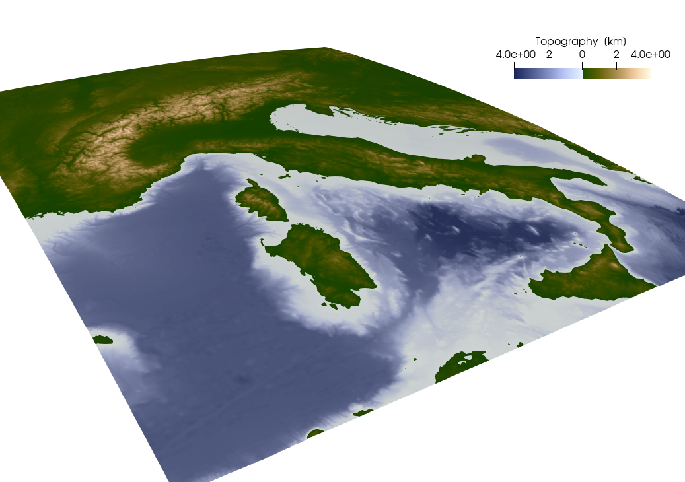
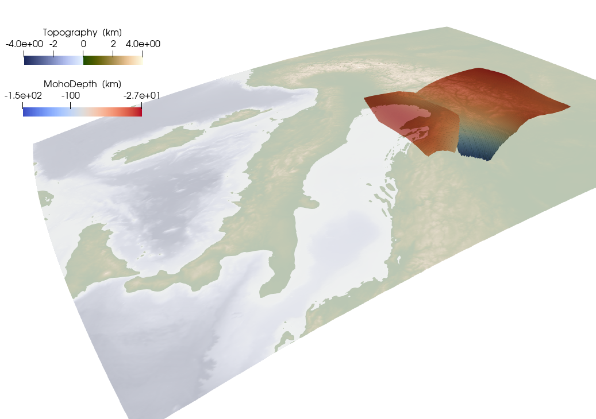
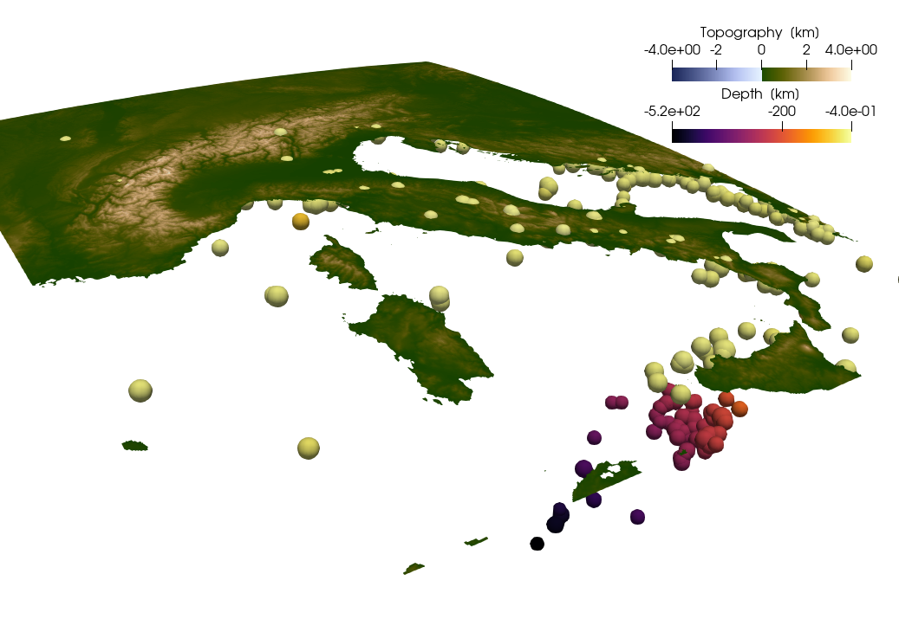
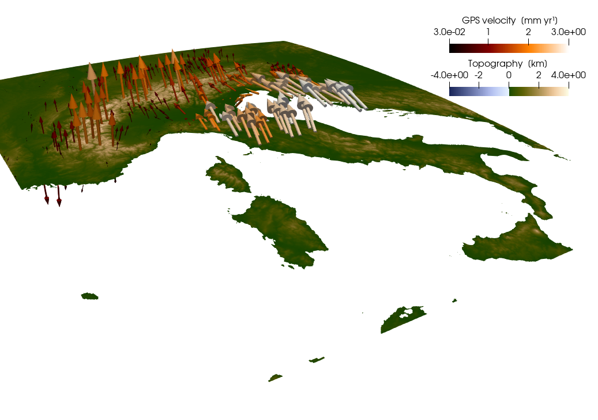
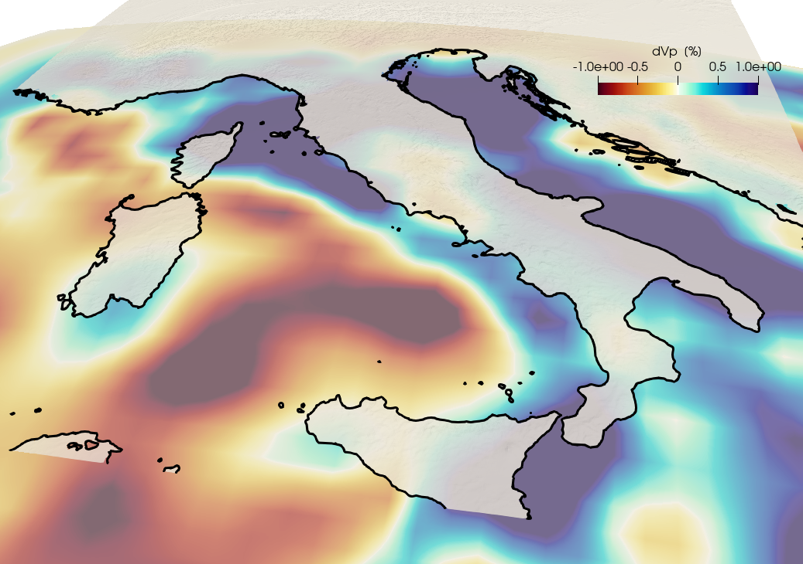
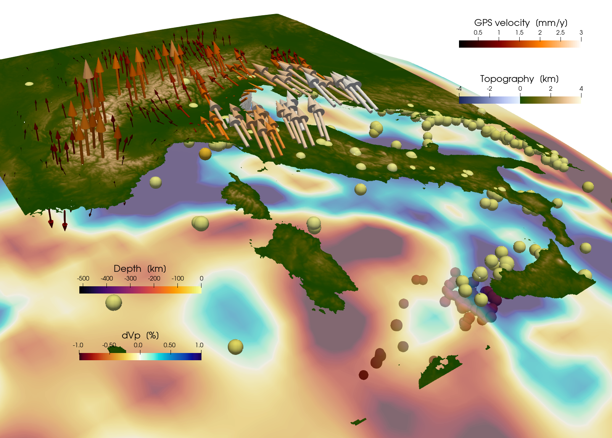

Alpine Data Visualization
Goal
This is a tutorial to:
- Download datasets from known sources
- Process and unify these datasets with
GeophysicalModelGenerator - Save the resulting dataset
- Export the datasets to Paraview
This is a rather lengthy tutorial that combines different other tutorials, but it will guide you through all the steps necessary to obtain a somewhat comprehensive view of the European Alps and their subsurface from a geodynamical point of view.
1. Surface Topography
In many cases, we want to add topographic data to our visualization. Here we use GMT.jl to download data from a certain region, and transfer that to GMG. To add the GMT package, simply add it with the julia package manager:
julia> ]
(@v1.10) pkg> add GMTand load both GMG and GMT with:
using GeophysicalModelGenerator, GMTWhen loading both packages, several GMT routines within GMG will be loaded. One of these routines is the function import_topo, where one simply has to provide the region for which to download the topographic data and the data source.
Topo = import_topo([4,20,37,50], file="@earth_relief_01m")The data is available in different resolutions; see here for an overview. Generally, it is advisable to not use the largest resolution if you have a large area, as the files become very large.
If you have issues with loading the topography with GMT, there is also the alternative to download the data yourself and import it using Rasters.jl.
We can now export this data to a VTK format so that we can visualize it with Paraview. To do so, GMG provides the function write_paraview:
write_paraview(Topo, "Topography_Alps")Also, if you want to save this data for later use in julia, you can save it as *.jld2 file using the function save_GMG:
save_GMG("Topography_Alps",Topo)The result looks like:  Note that we used the Oleron scientific colormap from here for the topography.
2. Moho topography
When looking at data concerning the Alpine subsurface, we are often interested in the depth of the Moho.
2.1 Download and import of the data
Here, we will use the dataset from Mroczek et al. (2023). This dataset is publicly available and can be downloaded from here. To allow for downloading such data, we use the julia package Downloads.jl, which is a dependency of GMG. To download the Moho data in the current directory, simply type:
download_data("https://datapub.gfz-potsdam.de/download/10.5880.GFZ.2.4.2021.009NUEfb/2021-009_Mroczek-et-al_SWATHD_moho_jul22.csv","MohoMroczek2023.csv")Here the downloaded file gets the name MohoMroczek2023.dat and will be saved in the current directory. A quick look at the file shows that it contains a header consisting of 11 lines, one line with the description of the different columns and then the actual data. Have a look at the file yourself. To import the CSV file, we will use the package DelimitedFiles.jl. Have a look at its documentation to see the different import options.
using DelimitedFiles
data_mroczek = readdlm("MohoMroczek2023.csv",',',header=false,skipstart=11)Note that we skipped the first 11 lines of the file as they contain the file header. The result of this operation will look like this:
julia> data_mroczek = readdlm("MohoMroczek2023.csv",',',header=false,skipstart=11)
40786×10 Matrix{Any}:
"X" "Y" "Z" "lat" "lon" "depth" "tPs" "k" "interp" "tag"
4185.26 1005.66 4640.51 47.152 13.5113 41.54 4.82 1.62 0 "PA"
4186.9 1005.95 4639.04 47.1319 13.5099 41.4893 4.81 1.62 0 "PA"
4188.54 1006.24 4637.57 47.1118 13.5085 41.4281 4.8 1.62 0 "PA"
4190.2 1006.53 4636.11 47.0917 13.5072 41.3568 4.8 1.63 0 "PA"
4191.86 1006.82 4634.66 47.0716 13.5058 41.2761 4.79 1.63 0 "PA"
4193.51 1007.12 4633.22 47.0516 13.5045 41.1865 4.78 1.63 0 "PA"
4195.18 1007.41 4631.78 47.0315 13.5031 41.0887 4.77 1.63 0 "PA"
4196.85 1007.71 4630.34 47.0114 13.5018 40.9835 4.76 1.63 0 "PA"
4198.53 1008.01 4628.91 46.9913 13.5004 40.8725 4.75 1.63 0 "PA"
4183.59 1007.45 4642.47 47.1721 13.5396 40.92 4.75 1.62 0 "PA"
4185.22 1007.73 4640.99 47.152 13.5382 40.8866 4.75 1.63 0 "PA"
4186.85 1008.02 4639.51 47.1319 13.5368 40.8435 4.75 1.63 0 "PA"
4188.49 1008.31 4638.04 47.1118 13.5355 40.7913 4.74 1.63 0 "PA"
4190.14 1008.6 4636.57 47.0917 13.5341 40.7305 4.73 1.63 0 "PA"
⋮ ⋮
4123.28 1111.52 4669.18 47.5537 15.0867 43.4301 5 1.67 0 "EU"
4124.02 1111.57 4666.69 47.5336 15.0848 44.7763 5.13 1.67 0 "EU"
4124.67 1111.59 4664.11 47.5136 15.0828 46.2535 5.28 1.67 0 "EU"
4125.23 1111.59 4661.42 47.4935 15.0808 47.868 5.44 1.67 0 "EU"
4125.71 1111.56 4658.63 47.4734 15.0788 49.6226 5.61 1.67 0 "EU"
4126.09 1111.51 4655.74 47.4533 15.0768 51.5103 5.79 1.66 0 "EU"
4126.41 1111.45 4652.77 47.4332 15.0749 53.496 6 1.66 0 "EU"
4126.7 1111.38 4649.78 47.4131 15.0729 55.5207 6.21 1.66 0 "EU"
4126.93 1111.28 4646.73 47.393 15.0709 57.6306 6.45 1.66 0 "EU"
4127.05 1111.16 4643.54 47.3729 15.0689 59.9233 6.7 1.66 0 "EU"
4127.0 1111.0 4640.2 47.3529 15.067 62.4358 6.98 1.66 1 "EU"
4126.2 1113.34 4649.82 47.4131 15.1 55.4728 6.21 1.66 0 "EU"
4126.41 1113.24 4646.74 47.393 15.098 57.6211 6.45 1.66 0 "EU"
4126.5 1113.11 4643.52 47.3729 15.096 59.9569 6.71 1.66 0 "EU"We are now only interested in the depth of the Moho at a given longitude/latitude. To obtain these values, we now have to extract columns 4-6. In addition, we also extract the 10th column, as it contains an identifier for the tectonic unit the respective point belongs to.
lon = zeros(size(data_mroczek,1)-1); lon .= data_mroczek[2:end,5];
lat = zeros(size(data_mroczek,1)-1); lat .= data_mroczek[2:end,4];
depth = zeros(size(data_mroczek,1)-1); depth .= -1.0*data_mroczek[2:end,6]; #multiplied with -1, as we consider depth to be negative
tag = string.(data_mroczek[2:end,10]); #get unit identifiers und convert them to strings
nothing #hideAs a next step, we determine how many different tectonic units there are:
units = unique(tag) #get different unitsWe will use these units later to save the Moho data separately for each tectonic unit.
2.2 Converting the data to a GMG dataset
To convert this data to a GMG dataset, we now have to interpolate it to a regular grid. You can generate the respective grid with the GMG function lonlatdepth_grid
Lon,Lat,Depth = lonlatdepth_grid(9.9:0.02:15.1,45.0:.02:49.0,0km);
nothing #hideTo interpolate the Moho data of the different units to this grid, we have here decided to employ a simple Nearest Neighbor interpolation for simplicity.
using NearestNeighbors!!! note Interpolating data is tricky and may result in unnecessary smoothing of the data. There are different ways to interpolate data on a regular grid. Have a look at our data interpolation tutorial to see the different possibilities.
Now that we have generated the grid, we can loop over our different tectonic units, extract the relevant data points and interpolate them to the regular grid:
for iunit = 1:length(units)
Dist = zeros(size(Lon))
#Get all points belonging to the unit
ind_unit = findall( x -> occursin(units[iunit], x), tag) #index of the points belonging to that unit
lon_tmp = lon[ind_unit]
lat_tmp = lat[ind_unit]
depth_tmp = depth[ind_unit]
#for later checking, we can now save the original point data as a VTK file:
data_Moho = GeophysicalModelGenerator.GeoData(lon_tmp,lat_tmp,depth_tmp,(MohoDepth=depth_tmp*km,))
filename = "Mroczek_Moho_" * units[iunit]
write_paraview(data_Moho, filename, PointsData=true)
#Now we create a KDTree for an effective nearest neighbor determination;
kdtree = KDTree([lon_tmp';lat_tmp']; leafsize = 10)
points = [Lon[:]';Lat[:]']
idxs, dists = knn(kdtree, points, 1, true) #get the distance to the nearest data point
dists = reduce(vcat,dists)
idxs = reduce(vcat,idxs)
idxs = reduce(vcat,idxs)
#Having determined the nearest neighbor for each point in our regular grid, we can now directly assign the respective depth. Whenever the nearest neighbor is further than a certain distance away, we assume that there is no Moho at this point and do not assign a depth to that point.
for i=1:length(idxs)
if dists[i]<0.02
Depth[i] = depth_tmp[idxs[i]]*km
else
Depth[i] = NaN*km
end
Dist[i] = dists[i]
end
#As we will be using the data later, we would also like to provide some Metadata so that we know where it is coming from:
Data_attribs = Dict(
"author"=> "Mroczek et al.",
"year"=> "2023",
"doi"=>"https://doi.org/10.5880/GFZ.2.4.2021.009",
"url"=>"https://nextcloud.gfz-potsdam.de/s/zB5dPNby6X2Kjnj",
)
#Finally, we can now export that data to VTK and save a `jld2` file using the `save_GMG` routine
Data_Moho = GeophysicalModelGenerator.GeoData(Lon, Lat, Depth, (MohoDepth=Depth,PointDist=Dist),Data_attribs)
filename = "Mrozek_Moho_Grid_" * units[iunit]
write_paraview(Data_Moho, filename)
save_GMG(filename,Topo)
endJust for checking, we can also plot both the original data and the resulting interpolated Moho: 
3. Seismicity
Earthquakes are always interesting, so lets import the seismicity data from ISC.
3.1 Download and import
ISC provides a method to download parts of it's catalogue via a web interface. See the description of the interface here. We will now download all reviewed earthquake data between 1990 and 2015 in the same region as the extracted topography. We will only consider earthquakes with a magnitude larger than 3. The resulting dataset is quite large, so consider to either limit the time range or the magnitude range.
download_data("http://www.isc.ac.uk/cgi-bin/web-db-run?request=COLLECTED&req_agcy=ISC-EHB&out_format=QuakeML&ctr_lat=&ctr_lon=&radius=&max_dist_units=deg&searchshape=RECT&top_lat=49&bot_lat=37&left_lon=4&right_lon=20&srn=&grn=&start_year=1990&start_month=1&start_day=01&start_time=00%3A00%3A00&end_year=2015&end_month=12&end_day=31&end_time=00%3A00%3A00&min_dep=&max_dep=&min_mag=3.0&max_mag=&req_mag_type=Any&req_mag_agcy=Any&min_def=&max_def=&prime_only=on&include_magnitudes=on&table_owner=iscehb","ISCData.xml")Once the data has been downloaded, we can extract lon/lat/depth/magnitude using the GMG function getlonlatdepthmag_QuakeML, which returns a GeoData structure:
Data_ISC = getlonlatdepthmag_QuakeML("ISCData.xml");
nothing #hideAs before, we can export this dataset to VTK and also save it as a jld2 file (as we are now exporting point data, we have to use the option PointsData=true):
write_paraview(Data_ISC, "EQ_ISC", PointsData=true);
save_GMG("EQ_ISC",Data_ISC)
4. GPS data
Besides data on the structure of the subsurface, it is also nice to see the dynamics of a region. Dynamic processes can be nicely seen in the surface velocities given by GPS data. As GPS data consists of three-dimensional vectors, we have to treat it differently than the seismicity data in the previous section. The example is based on a paper by Sanchez et al. (2018) https://essd.copernicus.org/articles/10/1503/2018/#section7.
4.1. Download and import GPS data:
The data related to the paper can be downloaded from: here. There you will find links to several data sets. Some are the data on the actual stations and some are interpolated data on a grid. Here, we will use the gridded data as an example, and will therefore download the following data sets:
- ALPS2017DEFHZ Surface deformation model of the Alpine Region https://store.pangaea.de/Publications/Sanchez-etal2018/ALPS2017DEF_HZ.GRD
- ALPS2017DEFVT Vertical deformation model of the Alpine Region https://store.pangaea.de/Publications/Sanchez-etal2018/ALPS2017DEF_VT.GRD
download_data("https://store.pangaea.de/Publications/Sanchez-etal_2018/ALPS2017_DEF_HZ.GRD","ALPS2017_DEF_HZ.GRD")
download_data("https://store.pangaea.de/Publications/Sanchez-etal_2018/ALPS2017_DEF_VT.GRD","ALPS2017_DEF_VT.GRD")Next, we will load the data. As above, we will use DelimitedFiles.jl to load the data. Let's first start with the vertical velocities, which are stored in ALPS2017_DEF_VT.GRD. If we open that file with a text editor, we see that the data starts at line 18, and has the following format:
Column 1: Longitude [degrees] Column 2: Latitude [degrees] Column 3: Velocity in the height direction [m/a] Column 4: Uncertainty of the height component [m/a]
So we have 4 columns with data values, and the data is separated by spaces. We can load that in julia as:
data_vz = readdlm("ALPS2017_DEF_VT.GRD",header=false,skipstart=17)And extract the data as vectors:
lon_vz = data_vz[:,1]
lat_vz = data_vz[:,2]
vz = data_vz[:,3]To have a closer look at the data, let's plot it. To do so, we will employ the julia package Plots.jl.
using Plots
Plots.scatter(lon_vz,lat_vz)We can see that the data is distributed on a regular grid. We can determine the size of this grid with:
nlon = length(unique(lon_vz))
nlat = length(unique(lat_vz))So we have a 41 by 31 grid. GMG requires 3D matrixes for the data (as we want to plot the results in Paraview in 3D). That is why we first initialize 3D matrixes for lon,lat,Vz:
Lon = zeros(nlon,nlat,1)
Lat = zeros(nlon,nlat,1)
Vz = zeros(nlon,nlat,1)And we can reshape the vectors accordingly:
Lon[:,:,1] = reshape(lon_vz,(nlon,nlat))
Lat[:,:,1] = reshape(lat_vz,(nlon,nlat))
Vz[:,:,1] = reshape(vz,(nlon,nlat))Now that we have imported the vertical velocities, let's do the same for the horizontal ones. Again looking at the data, we see that it starts at line 19 and is organized as follows: Column 1: Longitude [degrees] Column 2: Latitude [degrees] Column 3: East component of the deformation [m/a] Column 4: North component of the deformation [m/a] Column 5: Uncertainty of the east component [m/a] Column 6: Uncertainty of the north component [m/a]
Let's load the data again and extract the relevant data:
data_vh = readdlm("ALPS2017_DEF_HZ.GRD",header=false,skipstart=18)
lon_vh = data_vh[:,1]
lat_vh = data_vh[:,2]
ve = data_vh[:,3]
vn = data_vh[:,4]Let's have a look at how the data points of this dataset are distributed:
Plots.scatter(lon_vh,lat_vh)So it appears that the horizontal velocities are given on the same regular grid as well, but not in regions which are covered with water. This thus requires a bit more work to transfer them to a rectangular grid. The strategy we take is to first define 2D matrixes with horizontal velocities with the same size as Vz initialized with NaN (not a number).
Ve = fill(NaN,size(Vz));
Vn = fill(NaN,size(Vz));
nothing #hideNext, we loop over all points in lon_Hz,lat_Hz and place them into 2D matrixes:
for i in eachindex(lon_vh)
ind = intersect(findall(x->x==lon_vh[i], Lon), findall(x->x==lat_vh[i], Lat))
Ve[ind] .= ve[i];
Vn[ind] .= vn[i];
endAt this stage, we have horizontal and vertical velocities in units of m/yr. Yet, given the small velocities in the Alps, it makes more sense to have them in units of mm/yr:
Vz = Vz*1000;
Ve = Ve*1000;
Vn = Vn*1000;
nothing #hideAnd their magnitude is
Vmagnitude = sqrt.(Ve.^2 + Vn.^2 + Vz.^2);
nothing #hide4.2 Interpolate topography on the grid
At this stage we have the 3D velocity components on a grid. Yet, we don't have information yet about the elevation of the stations (as the provided data set did not give this). We could ignore that and set the elevation to zero, which would allow saving the data directly. Yet, a better way is to load the topographic map of the area and interpolate the elevation to the velocity grid. As we have already the loaded the topographic map in section 1 of this tutorial, we can simply reuse it. To interpolate, we will use the function interpolate_datafields_2D
topo_v, fields_v = interpolate_datafields_2D(Topo, Lon, Lat)The variable we are interested in is the variable topo_v. fields_v contains the interpolation of all the fields in Topo to the new grid and we only keep it here for completeness. Note that as the topography in the Topo variable is in km, topo_v will also be given the unit of km. Next, we have to combine the data in a GeoData structure. The velocities are specified as a Tuple (called Velocity_mm_year), which is interpreted a vector when saving this to Paraview.
Data_GPS_Sanchez = GeoData(Lon,Lat,topo_v,(Velocity_mm_year=(Ve,Vn,Vz),V_north=Vn*mm/yr, V_east=Ve*mm/yr, V_vertical=Vz*mm/yr, Vmagnitude = Vmagnitude*mm/yr, Topo=fields_v.Topography))And as always, we'll save everything in VTK format and in jld2 format
write_paraview(Data_GPS_Sanchez, "GPS_Sanchez")
save_GMG("GPS_Sanchez",Data_GPS_Sanchez)
5. Seismic tomography data
Finally, we'd like to have a look at the subsurface by looking at a seismic tomography. To do so, we'll first download the tomography published by Rappisi et al.(2022). The data is provided as NetCDF files:
download_data("https://figshare.com/ndownloader/files/34093955","aniNEWTON21.nc")We can load this file with the NCDatasets package.
using NCDatasets
dataset = NCDataset("aniNEWTON21.nc","r")The output of this command will also provide you with an overview of the file content. In the following, we will extract some of this content.
lon = dataset["Longitude"]
lat = dataset["Latitude"]
dlnVp = dataset["dlnVp"]
Vp = dataset["Vpi"]
Depth = dataset["Zg"]As longitude and latitude are only given as 2D grids, we here have to convert them to 3D matrices.
Lon = repeat(lon[:,:],1,1,size(Depth,3));
Lat = repeat(lat[:,:],1,1,size(Depth,3));
nothing #hideFinally, as we would like to keep the information on the data source, we add this information as a dictionary.
Data_attribs = Dict(
"author"=> "Rappisi, F. and VanderBeek, B. P. and Faccenda, M. and Morelli, A. and Molinari, I.",
"title" => "Slab Geometry and Upper Mantle Flow Patterns in the Central Mediterranean From 3D Anisotropic P-Wave Tomography",
"journal"=>"Journal of Geophysical Research: Solid Earth",
"volume"=>127,
"number"=>5,
"pages"=>"e2021JB023488",
"doi"=>"https://doi.org/10.1029/2021JB023488",
"url"=>"https://doi.org/10.1029/2021JB023488",
"year"=>2022
)Now we are all set and can create a GeoData structure which along with metadata
Data = GeoData(Lon,Lat,Depth[:,:,:],(Vp=Vp[:,:,:],dVp=dlnVp[:,:,:]),Data_attribs);
nothing #hideAnd then we save it again.
write_paraview(Data, "Rappisi2022")
save_GMG("Rappisi2022",Data)The result looks like: 
For the sake of this tutorial, we have now imported all the data we would like to look at. All that is missing is now a joint visualization of these datasets. To obtain this visualization, we will load all the VTK files into Paraview and have a look: 
A Paraview statefile that reproduces this visualization is available under tutorials/Tutorial_AlpineData.pvsm.
This page was generated using Literate.jl.